Best Games for Low-End PCs
Strong games that do not require a monster graphics card, with enough depth to justify playing today.
Not every worthwhile PC game needs expensive hardware. Some of the most durable games in the medium are mechanically rich, visually flexible, and friendly to older machines.
A focused horror game that still looks effective because atmosphere, lighting, and sound carry more weight than raw fidelity.
Technically old, mechanically rich, and still one of the best RPGs ever made. Mods can improve comfort without requiring modern hardware.
The Special Edition is flexible, deeply moddable, and still offers hundreds of hours on modest systems if you avoid extreme graphics packs.
Performance varies by edition and settings, but the core experience can run on a wide range of devices and scales well with low graphics settings.
A brilliant systems game where the drama comes from simulation and decisions, not visual horsepower.
Low-end PC gaming is strongest when you prioritize systems, writing, and replayability over visual spectacle.